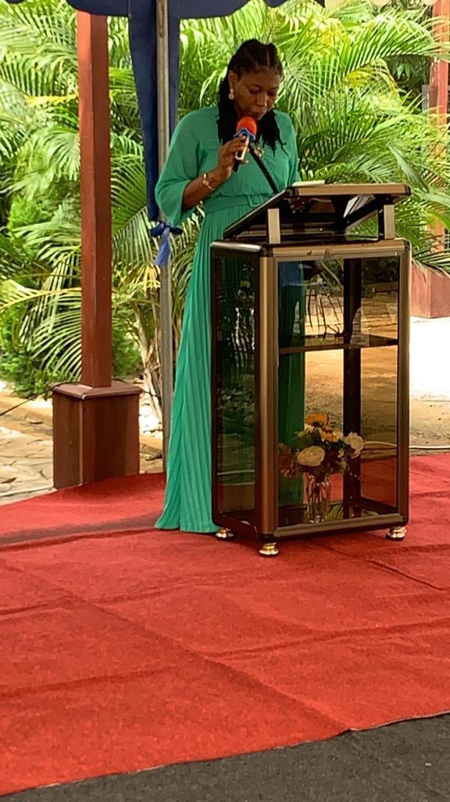
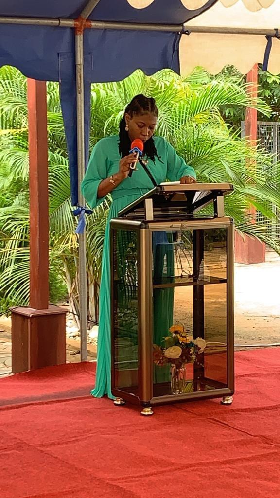
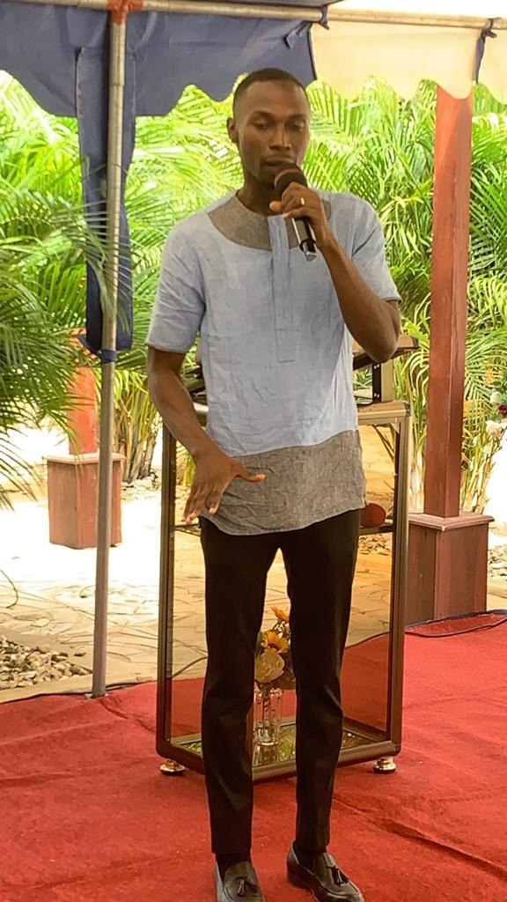
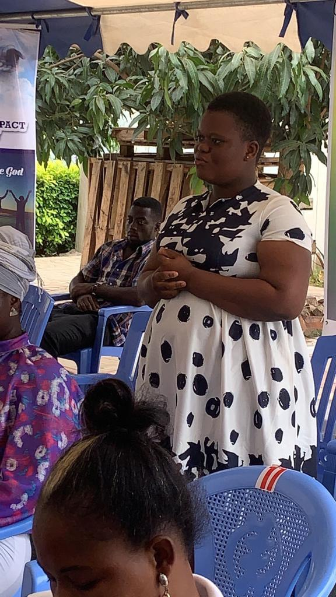

Who We Are
christLife Impact Ministry is a religious congregation dedicated to missionary work among the most abandoned in society. It was founded in 2010 by Pastor Joseph Okine, to evangelize the marginalized people around the Kingdom of Naples. Members of the congregation are Catholic priests and vowed religious brothers. They minister to the most abandoned people in more than 100 countries across our wounded world.


The Redemptorists are devoted to Mary, as Our Mother of Perpetual Help. The original icon of Perpetual Help was presented to the Congregation by Pope Pius IX in 1865. The Pope commissioned the Redemptorists to be missionaries of the icon. The Church of St. Alphonsus Liguori in Rome has been home to the original icon since the Redemptorists received it.
The Redemptorists of North America number approximately 500 men across the continent, and they serve in five North American Provinces—Baltimore, Canada, Denver, Extra-Patriam and Mexico.
This website is dedicated to keeping both Redemptorists and the public updated as to the ministries that are being served by members of the Congregation all across North America. For more information, we also have a Facebook page, Instagram page and YouTube page. All can be accessed through the icons in the upper right corner of this page.